Kod ve sistemler · Çalışıyor
ATÖLYE DEFTERİ · 19 KAYIT
Bu sayfa bir başarı sıralaması değil. Çalışan sistemler, canlı atölyeler, yöntem notları ve yarım kalan yollar aynı kayıt defterinde duruyor.
Bir hikâyeyi açtığında yalnızca sonucu değil; neden başladığını, nerede zorlandığını, neyin değiştiğini ve bugün nerede durduğunu görürsün.
Kod ve sistemler · Çalışıyor

Kod ve sistemler · Gelişiyor
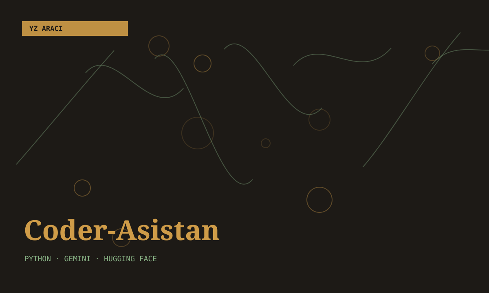
Kod ve sistemler · Arşivde
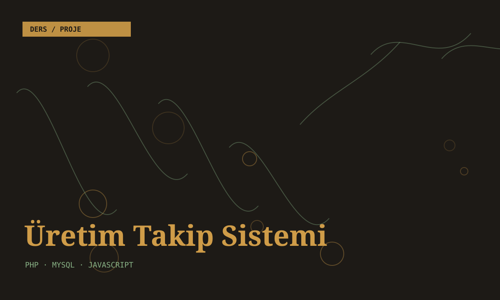
Kod ve sistemler · Çalışıyor
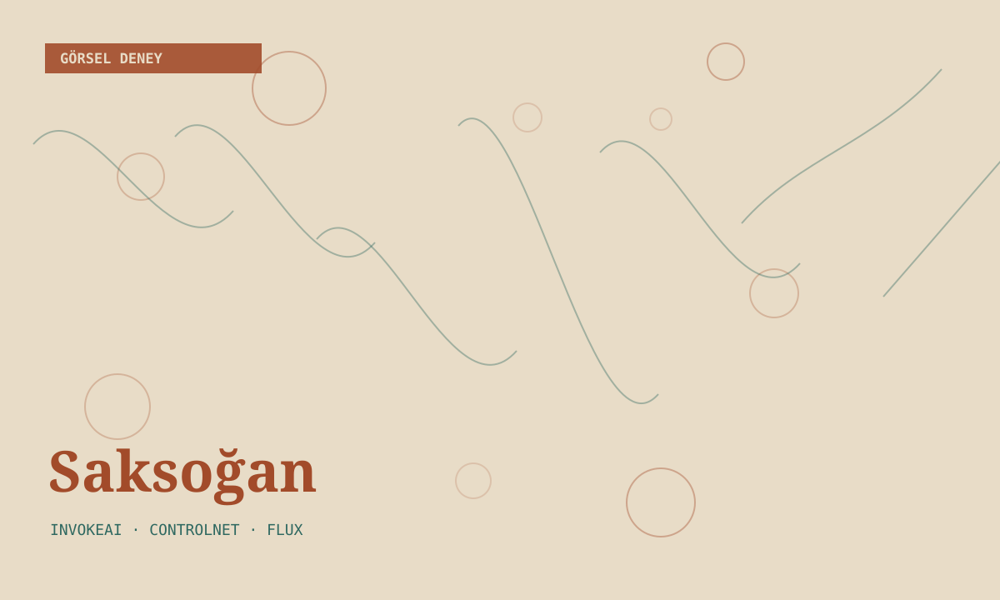
Görsel, render ve 3D · Denendi

Görsel, render ve 3D · Üzerinde çalışıyorum

Görsel, render ve 3D · Denendi

Video ve hareket · Üzerinde çalışıyorum
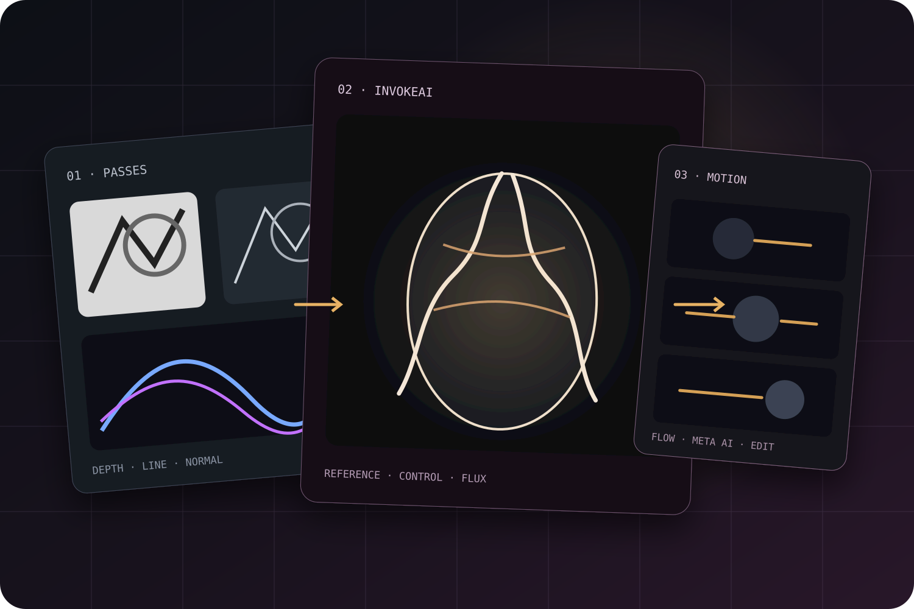
Video ve hareket · Atölyede sürüyor
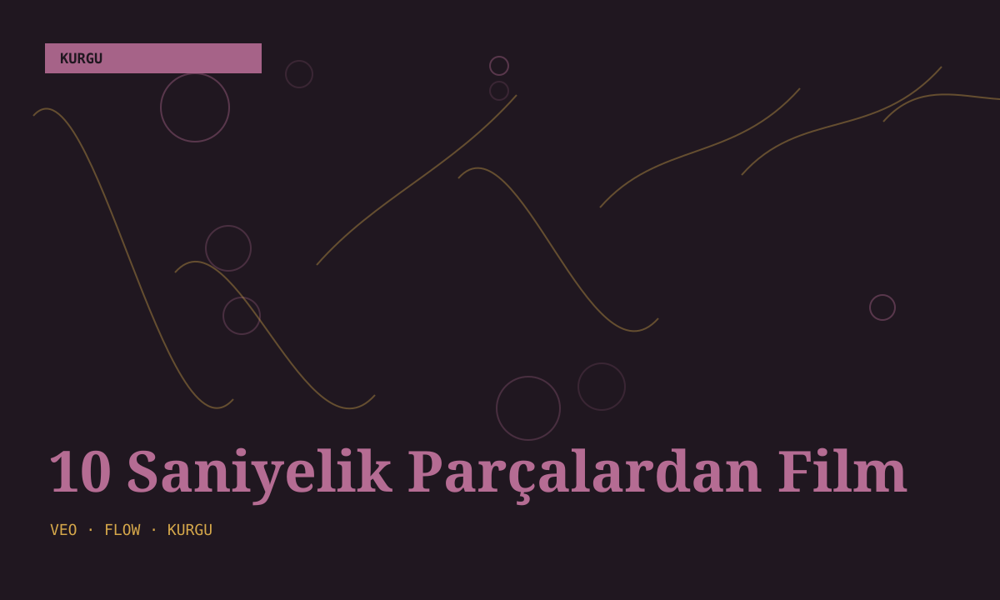
Video ve hareket · Yarım kaldı
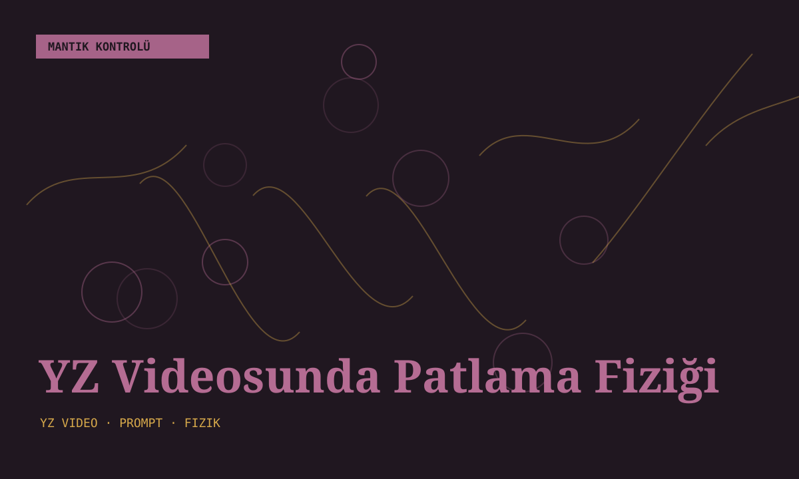
Video ve hareket · Not
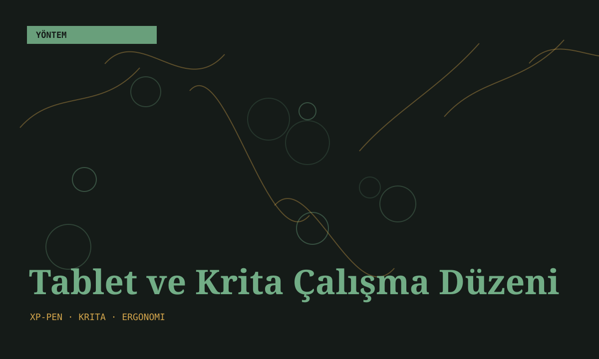
YZ ve yöntem · Çalışıyor
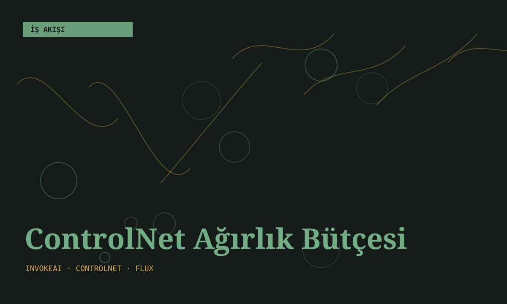
YZ ve yöntem · Not
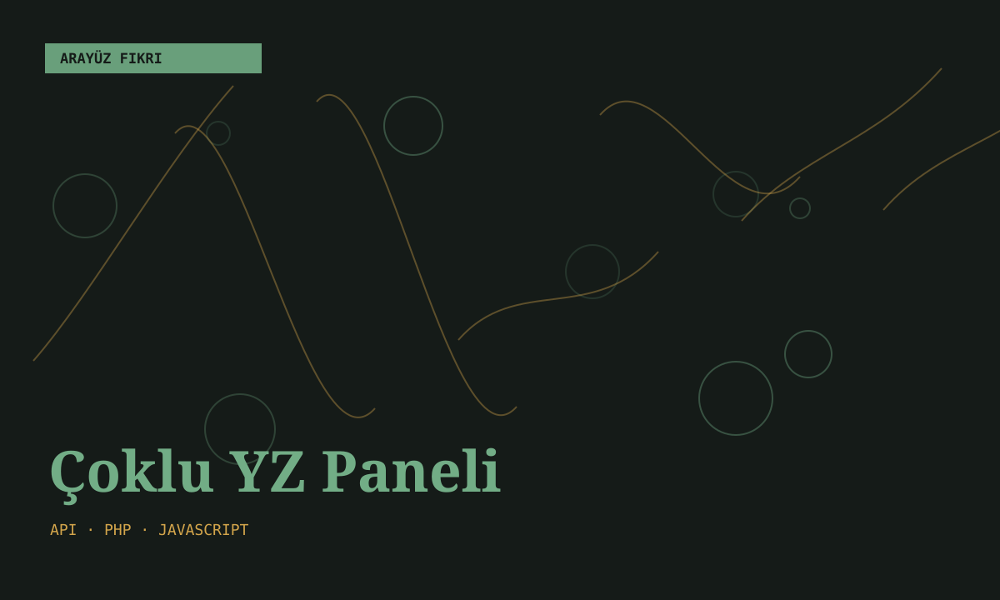
YZ ve yöntem · Fikir

Ses ve etkileşim · Arşivde
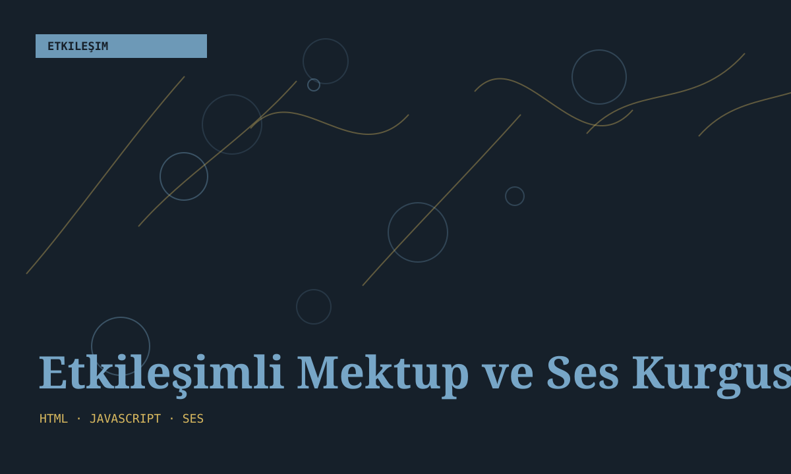
Ses ve etkileşim · Denendi

Öğrenme ve eğitim · Üzerinde çalışıyorum
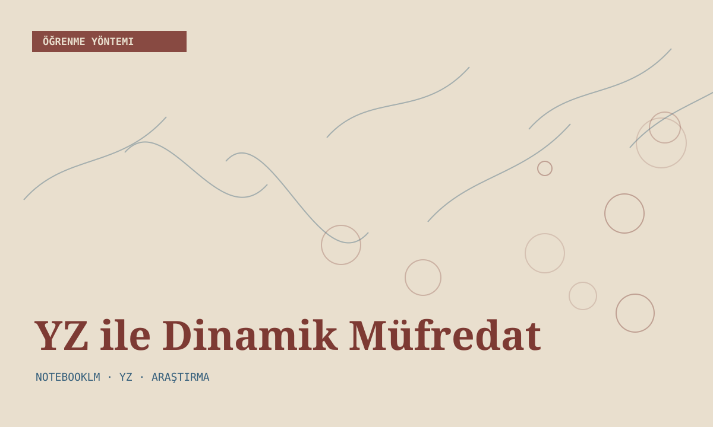
Öğrenme ve eğitim · Not
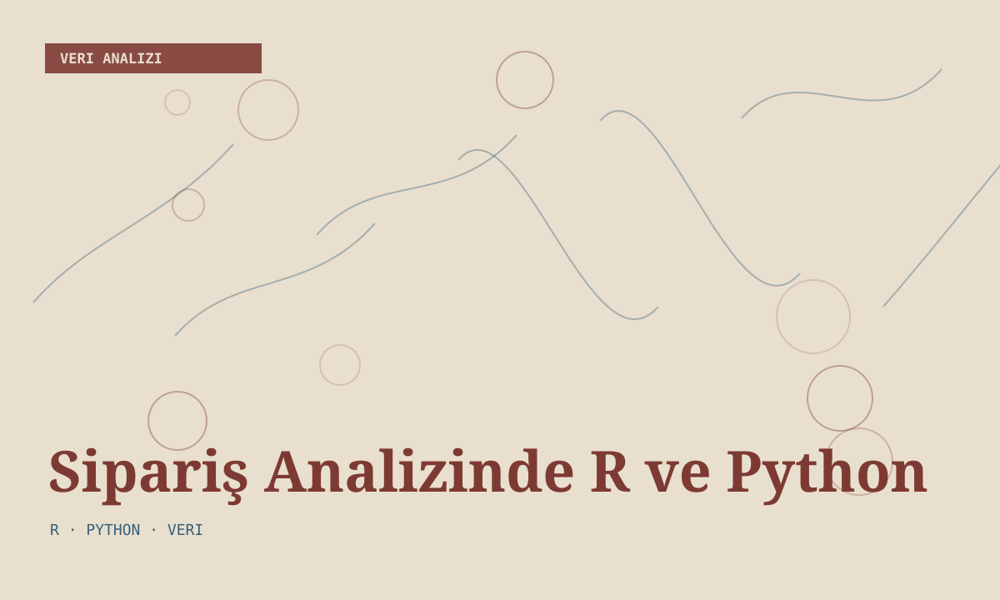
Öğrenme ve eğitim · Tamamlandı
Bu filtrelerle eşleşen bir kayıt bulunamadı.